Printing Process
Material process, nozzle setup, process constraints, and why uninterrupted deposition matters.
Open pageA framework for continuous multi-robot print-while-drive additive manufacturing using coupled trajectory planning, retiming, and closed-loop robot control.
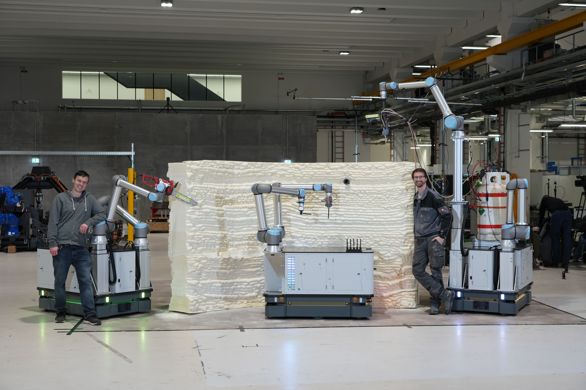
The video shows the complete print-while-drive process, highlighting continuous material deposition, synchronized base–manipulator motion, and closed-loop process control.
Selected visualizations of the planning, execution, and resulting structures provide an overview of the proposed framework and its key components.
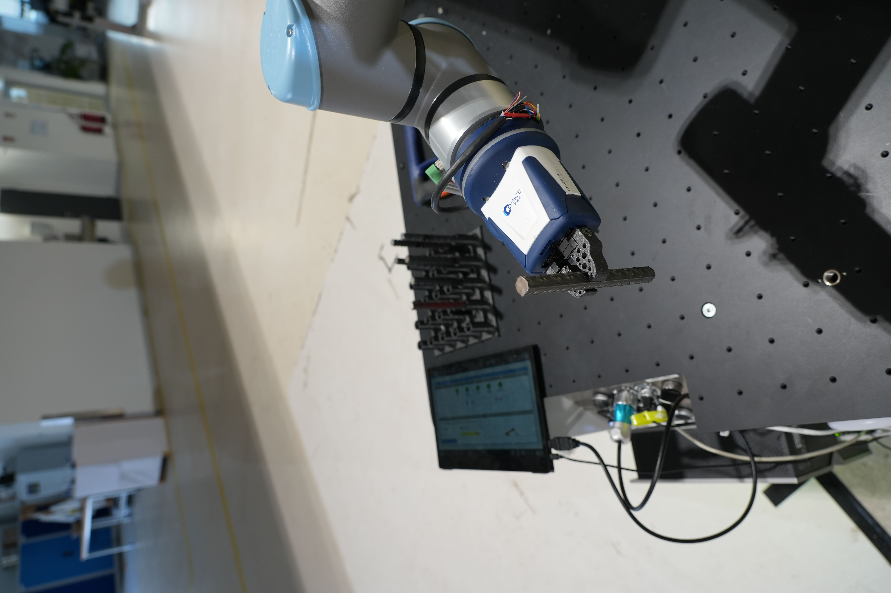
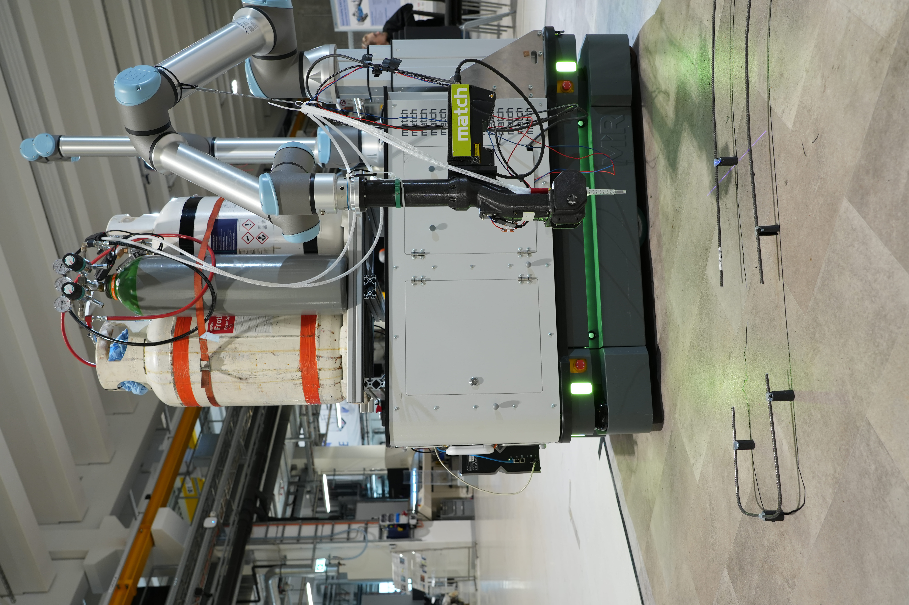
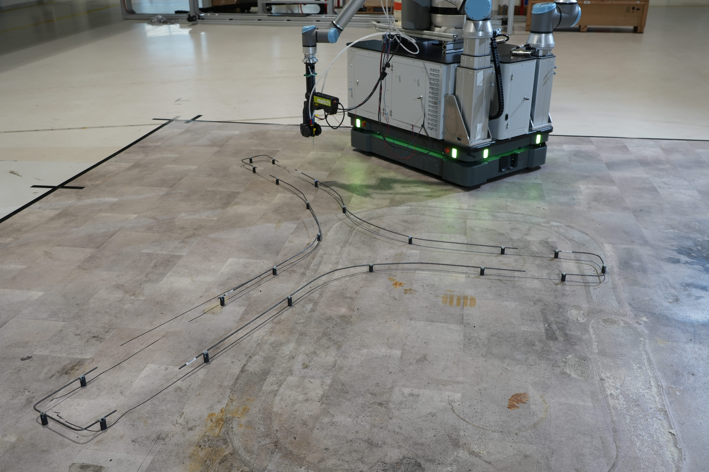
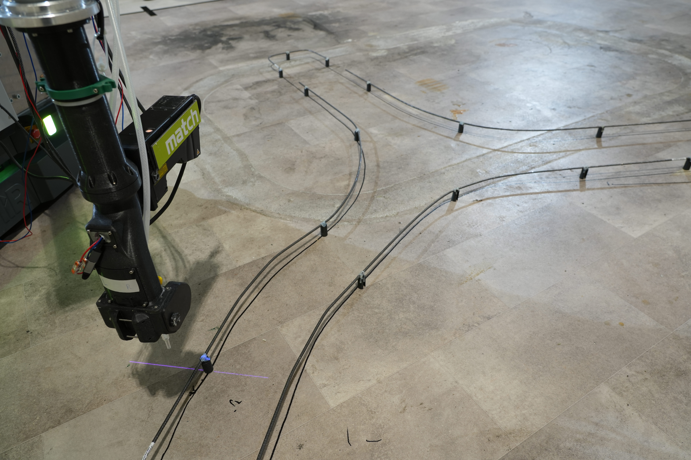
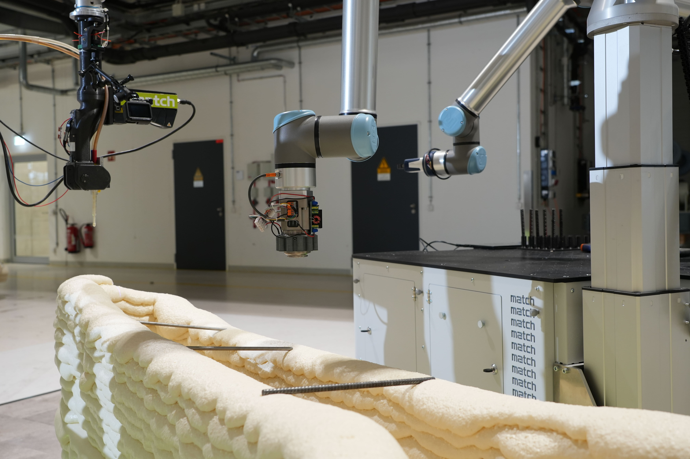
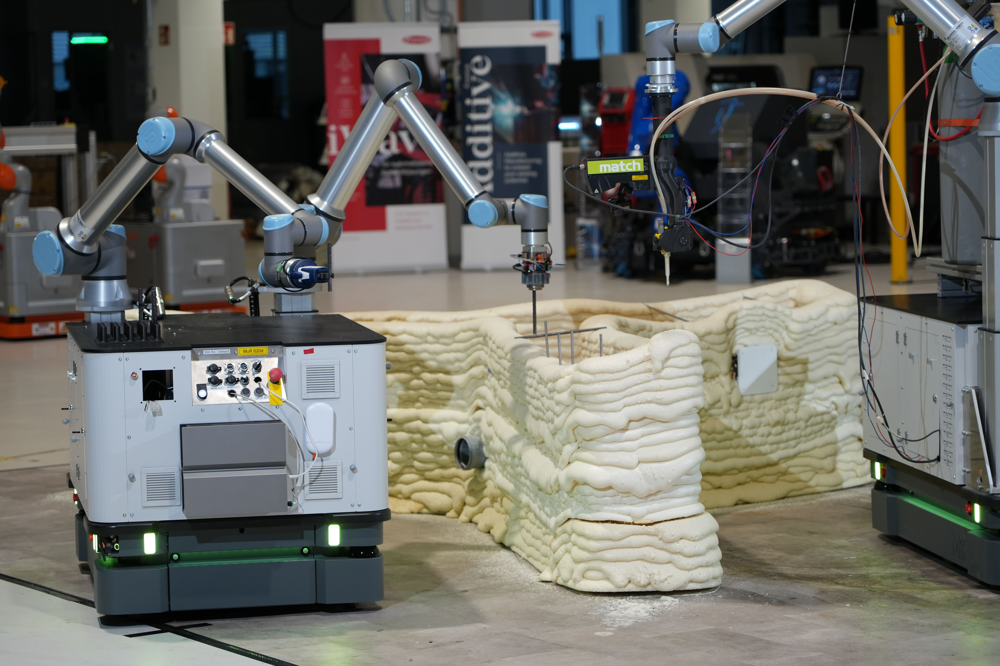
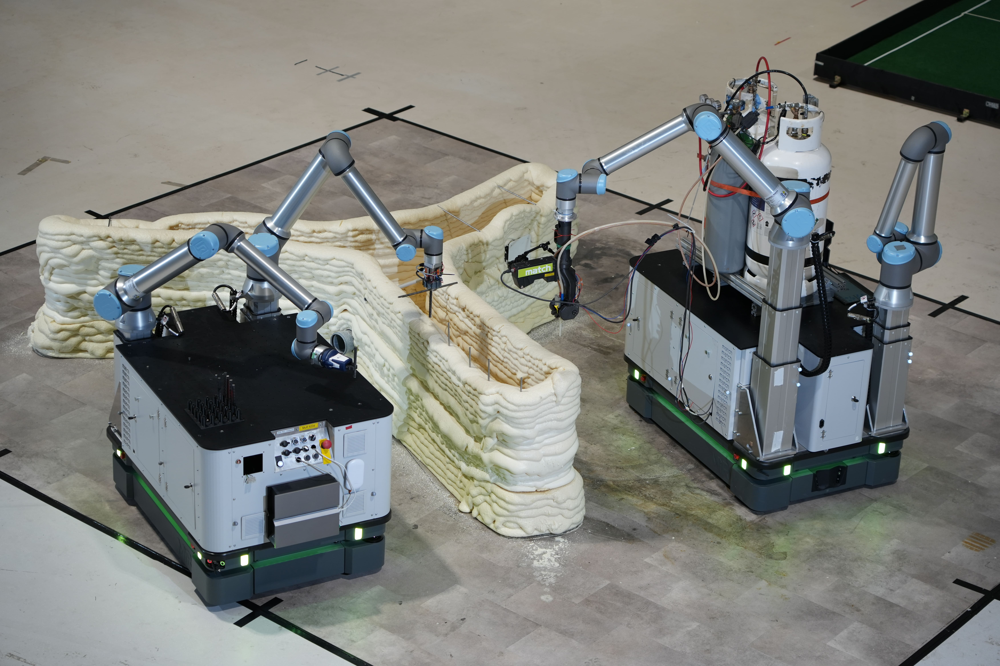
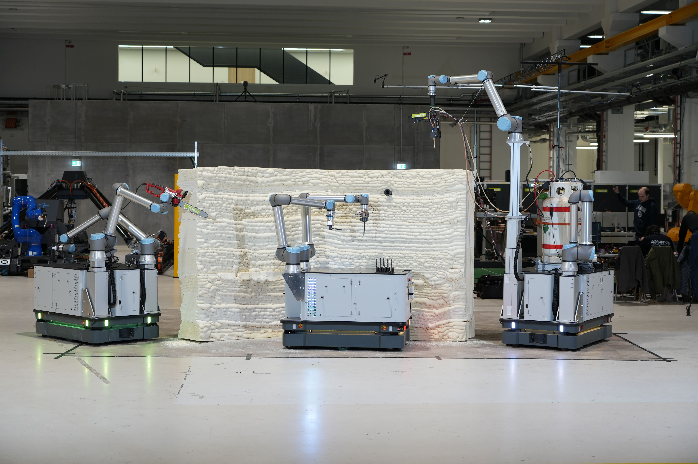
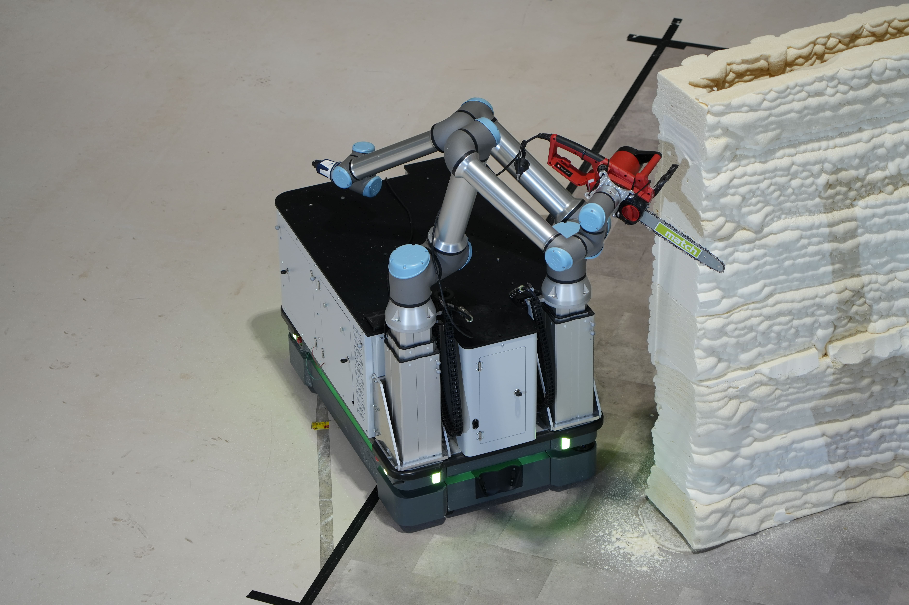
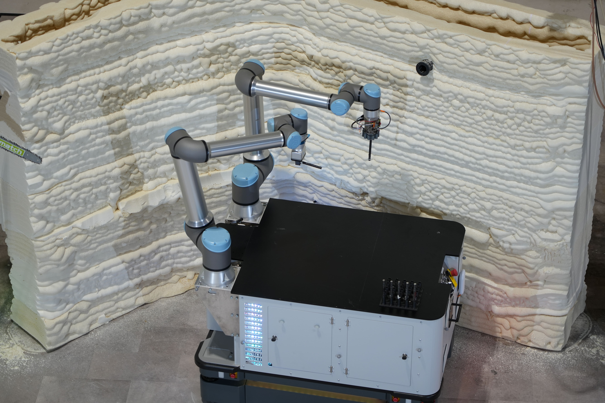
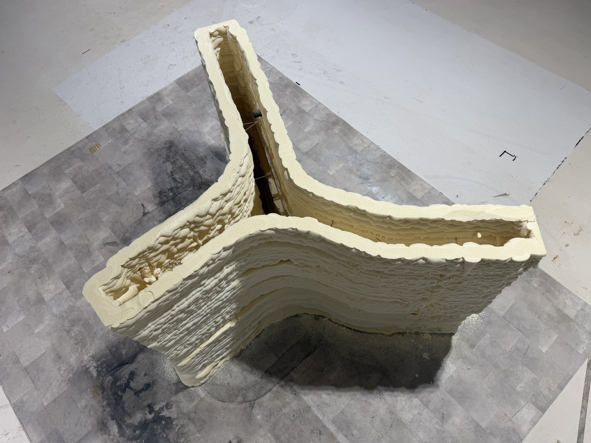
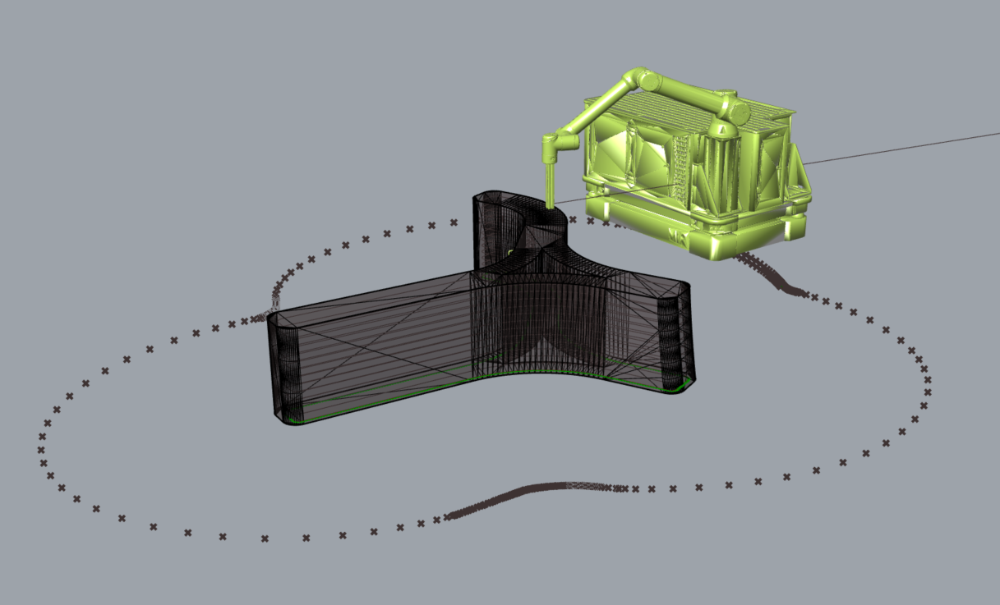
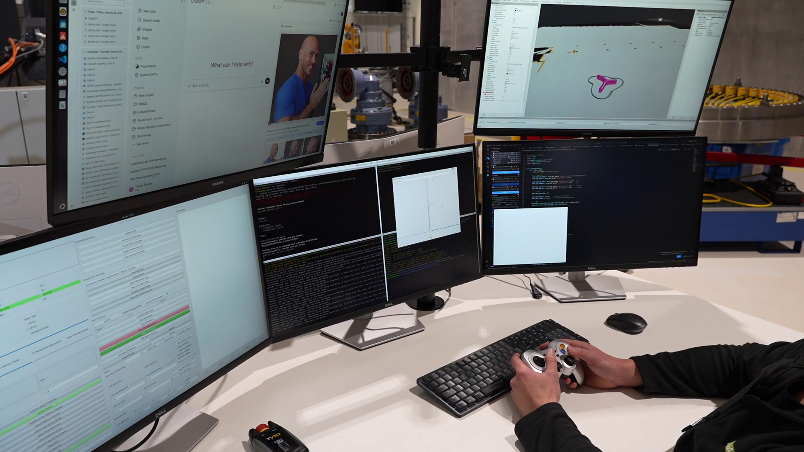
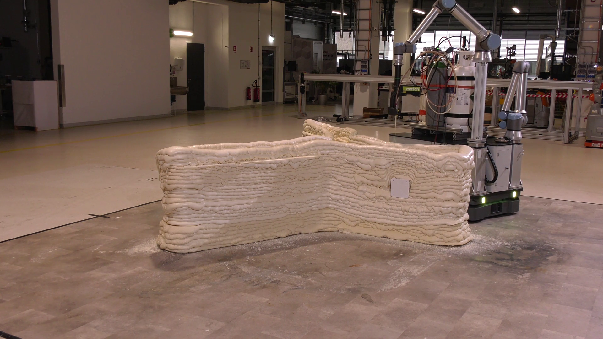
Each chapter has its own clean overview page, ready for additional figures, captions, and short explanatory text.
Material process, nozzle setup, process constraints, and why uninterrupted deposition matters.
Open pageFrom TCP slicing to nonholonomic platform planning with reach and collision constraints.
Open pageIndex-offset based post-processing for smoother MiR motion and lower peak velocities.
Open pageCoupled MiR/UR control, laser feedback, and online correction during fabrication.
Open pageExperimental results, reconstruction, process quality, and performance of the full framework.
Open page